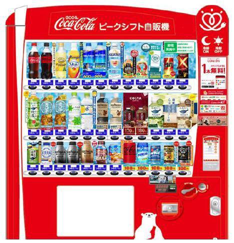

<!DOCTYPE html>
<html lang="ja">
<head>
    <meta charset="UTF-8">
    <meta name="viewport" content="width=device-width, initial-scale=1.0">
    <title>キャンパスマップ</title>
    <link rel="stylesheet" href="https://unpkg.com/leaflet@1.9.4/dist/leaflet.css" />
    <script src="https://unpkg.com/leaflet@1.9.4/dist/leaflet.js"></script>
    <style>
        #map {
            height: 100vh; /* 画面全体にマップを表示 */
            width: 100%;
        }
        .popup-image {
            max-width: 200px; /* 画像の最大幅を設定 */
            height: auto;     /* 縦横比を保つ */
            border: 1px solid #ccc; /* 画像に枠を付ける */
            border-radius: 5px;
        }
    </style>
</head>
<body>
    <div id="map"></div>

    <script>
        // Leaflet.jsを初期化
        var map = L.map('map', {
            crs: L.CRS.Simple, // 単純な座標系を使用
            minZoom: -2,       // ズームアウトを可能に
        });

        // 地図の画像範囲を設定（例: 幅2000px, 高さ1000px）
        var bounds = [[0, 0], [465, 455]];

        // 地図画像をオーバーレイとして追加
        L.imageOverlay('images/campasmap.webp', bounds).addTo(map);

        // 地図を画像範囲にフィット
        map.fitBounds(bounds);

        // ピンを地図上に追加し、ポップアップで画像を表示
        var vendingMachine1 = [200, 150]; // ピクセル座標 (例)
        L.marker(vendingMachine1).addTo(map).bindPopup(`
            <h3>自販機 1</h3>
            
        `);

        var vendingMachine2 = [300, 100]; // ピクセル座標 (例)
        L.marker(vendingMachine2).addTo(map).bindPopup(`
            <h3>自販機 2</h3>
            
        `);
    </script>
</body>
</html>